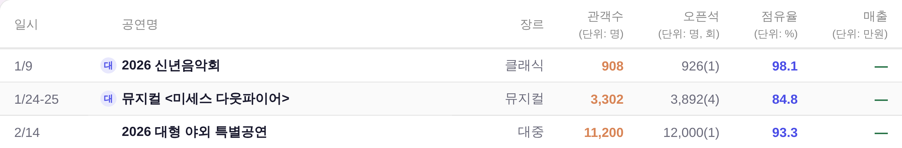

운영자 지시 260811 「1줄일 경우에는 그냥 2줄이라고 생각했을때 높이의 중앙에 글자가 오도록」 ·
대상 = 사업 목록 표 정본 _bizListTable(대시보드 3면 우 열 + 「연간 누적 실적」 모달 둘 다) ·
화면 = 결정적 목데이터(tools/qa_mock_ops.mjs) ?qa=admin 경로 · 실API·실데이터·PII 미접촉.
머리글 7칸 중 4칸(관객수·오픈석·점유율·매출)에 (단위: …) 부줄이 붙어 행 높이 49px을 만든다.
그런데 부줄이 없는 3칸(일시·공연명·장르)은 vertical-align:top이라 그 높이의 꼭대기에 매달려 아래로 빈칸만 남겼다.
| 칸 | 줄 | 전 top | 후 middle | 비고 |
|---|---|---|---|---|
| 일시 · 공연명 · 장르 | 1줄 | mid 16.0 | mid 24.0 | 글자가 8px 내려앉는다 = 이번 변경의 전부 |
| 관객수 · 오픈석 · 점유율 · 매출 | 2줄 | mid 16.0 / 34.0 | mid 16.0 / 34.0 | 전후 동일 — 자기 높이가 곧 행 높이라 top↔middle이 같은 자리 = 회귀 0 |
| 1줄 글자 중심 − 2줄 잉크 중심 | −9.0px | −1.0px | 남은 1px = 「잉크 중심」 정의상 부줄 margin-top:2px가 만드는 편차(칸 상자 중심으로는 정확히 0) | |
측정 = tools/scratch/probe_saletbl_hdvalign.mjs(행 상단 기준 CSS px · 각 줄의 Range 사각형 중점).
왼쪽 세 칸(일시·공연명·장르)만 보면 된다. 전 = 「(단위: …)」 줄의 윗줄에 맞춰 붙어 있고, 후 = 두 줄 덩어리의 가운데에 온다.
vertical-align:topvertical-align:middle
아래 두 상자는 정본과 같은 값(패딩 8/12 · 12px 머리글 · 10.5px 부줄 · margin-top:2px)으로 다시 그린 것이다. 파선이 행 중심.
| 일시 | 장르 | 관객수 (단위: 명) |
매출 (단위: 만원) |
| 일시 | 장르 | 관객수 (단위: 명) |
매출 (단위: 만원) |
| 축 | 이 결함을 잡나 | 왜 |
|---|---|---|
패리티 래칫 smoke_component_parity.mjs | 아니오 | 키가 클래스 조합인데 이 표 머리글 <td>는 클래스가 없다(인라인 조립). 게다가 측정 신호가 색·배경·테두리·라운드·활자·패딩·그림자라 vertical-align이 목록에 아예 없다. 이번에도 PASS(갈래 1종 sub [SPAN]:2 · 증가 0)로 통과했다 = 이 축은 잡은 적이 없다 |
사업 목록 정본 check_biz_list.py | 부분 | 「머리글 배열이 1곳인가」를 잠근다 = 값 자체는 안 보지만, 고치면 두 화면에 동시에 걸린다는 건 보장한다. 실측 = 3면 우 열·모달 둘 다 valign=middle |
디자인 게이트 check_design.py | 해당 없음 | 색·토큰 축. raw hex 1545/1545 무변(신규 색·토큰·클래스 0) |
| 기틀 §5.5 표기 규약 | 이제 등재 | 「머리글 세로 정렬 2종」 표 신설 — 아래 5절의 정반대 결정 때문 |
top이 정본| 표 | 정본 | 부줄 비율 | 운영자 결정 |
|---|---|---|---|
판매현황 상세 _bizListTable | middle | 7칸 중 4칸 | 260811 — 부줄이 다수라 그쪽이 행 높이의 기준이 된다. 1줄 칸을 위에 매달면 아래가 빈다 |
연간 실적 _yrTable | top | 15칸 중 1칸 | 260723 「단줄 연도가 중앙정렬로 떠 보이던 것 교정」 — 부줄이 예외라 나머지 연도가 한 줄로 서는 쪽이 맞다 |
check_design 1545/1545 무변 — 신규 raw hex·토큰·:root·CSS 클래스 0. middle은 이미 있는 어휘(.adm-tbl·.cs-tbl·.ana-tbl tbody td·_yrTable rowspan 칸)check_biz_list ✓ · check_modal_head ✓ · check_exchart ✓ · check_refs ✓ · check_wide_threshold ✓smoke_component_parity PASS(갈래 증가 0) · smoke_layout 1920/1440/1366 ✓ · build_annual_yr ✓